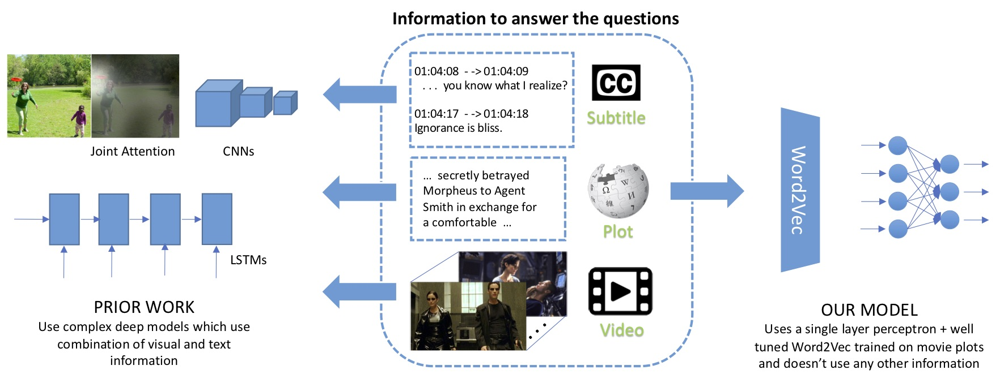

Are we asking the right questions in MovieQA?
|  |
| Joint vision and language tasks like visual question an- swering are fascinating because they explore high-level understanding, but at the same time, can be more prone to language biases. In this paper, we explore the biases in the MovieQA dataset and propose a strikingly simple model which can exploit them. We find that using the right word embedding is of utmost importance. By using an appropriately-trained word embedding, about half the Question-Answers (QAs) can be answered by looking at the questions and answers alone, completely ignoring narrative context from video clips, subtitles, and movie scripts. Com- pared to the best published papers on the leaderboard, our simple question+answer only model improves accuracy by 5% for video + subtitle category, 5% for subtitle, 15% for DVS and 6% higher for scripts. |
People
|
Bhavan Jasani |
Rohit Girdhar |
Deva Ramanan |